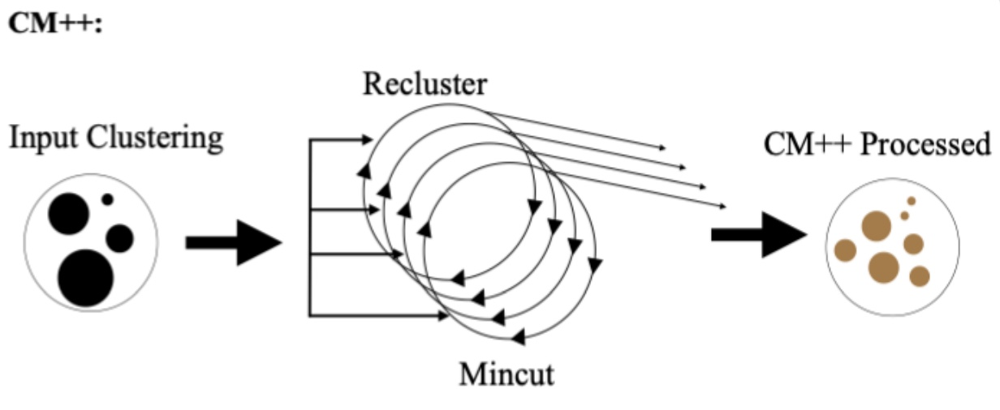

MACH2-Viz - An Interactive Visual Tool for Exploring and Studying Cancer Metastasis
TODO
CM++ - A Pipeline Software for Well-Connected Community Detection
Community detection is the process of partitioning a very large graph into smaller "meso-scale" subgraphs. The definition of a "good" community is very amorphous. As such we created a generalizable community detection pipeline that allows users to switch between stages of operations (community detection with their specified algorithm, size filtering, tree filtering, statistics computation). We also created a stage in the pipeline that "chisels" computed communities into well-connected communities (illustrated below) through pruning and mincuts. This software was created within Prof. George Chacko and Prof. Tandy Warnow's group.
Go to Docs Page! View Source Code!
Voice-Activated Digital Home Assistant Application/Skill Development: Instructional Support and Recommendation Application Development for Older Adults with Mobility Disabilities
This project is under the Human Factors and Aging Laboratory at the University of Illinois and TechSAge at Georgia Tech. I developed an Alexa application that delivers instructional material and curation of other Alexa apps and functionalities to older adults and those living with mobility disabilities. The application follows heuristics such as recognition vs. recall, error handling, etc. so that those unfamiliar with technology can easily use this voice based app.

Go to Project Page! View Source Code!
Please Note
To see the rest of projects I have worked on, check out my Github!